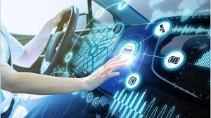

¿Que es la telematica?
La telemática es un campo de la ciencia que se refiere a la combinación de la informática
y de la tecnología de la comunicación para el envío y recepción de datos.
El término telemática es un concepto amplio y abarca una gran variedad de servicios para acceder a
diversos
recursos y medios de información. El concepto más común es telemática del transporte, que consiste
en recoger
y transmitir datos de forma inalámbrica en tiempo real desde el dispositivo colocado en el vehículo.
Los
datos se conservan en el servidor, que los recoge para su procesamiento y almacenamiento. Puede
tratarse
de una gran variedad de información, como el estilo de conducción, el tiempo de uso, las rutas, la
ubicación,
el estado funcional del vehículo, etc.
la telemática se ocupa del aspecto técnico o material de la interconexión de sistemas informáticos,
lo
cual es de una importancia vital en el mundo globalizado de hoy, tan dependiente de las
transacciones y
comunicaciones a través de largas distancias.
Origen de la telematica
Inicios de la telemática. La telemática se remonta a mediados del siglo XX, cuando
comenzaron a
utilizarse sistemas rudimentarios para rastrear vehículos y enviar información a través de ondas de
radio. Estos primeros sistemas permitían conocer la localización del vehículo, pero eran limitados
en términos de funcionalidad.
Desarrollo de los sistemas GPS. En los años 70 y 80, el desarrollo de los sistemas
GPS (Global
Positioning System) permitió una mejora significativa en la precisión y confiabilidad de la
geolocalización. Esto abrió nuevas posibilidades para el seguimiento y gestión efectiva de flotas.
Avances en comunicaciones móviles. Con el surgimiento y rápido desarrollo de las
tecnologías
móviles, como el GPRS (General Packet Radio Service) y posteriormente el 3G y 4G, se abrieron aún
más posibilidades para transmitir datos entre los vehículos y centros de control. Esto permitió una
mayor interacción en tiempo real y una transmisión más rápida y eficiente de información.
Desarrollo del Internet de las cosas (IoT). Con la llegada del IoT, marcada por la
interconexión
masiva entre objetos cotidianos a través de Internet, se dio un nuevo impulso a la telemática. Los
vehículos empezaron a estar equipados con sensores y dispositivos que permitían la recolección de
una gran cantidad de datos en tiempo real. Esto abrió nuevas posibilidades para el análisis y
aprovechamiento de la información generada por las flotas.
Integración con sistemas de gestión. La evolución de la telemática también ha
implicado una mayor
integración con otros sistemas de gestión empresarial. Los datos recolectados por los dispositivos
telemáticos ahora se pueden combinar con información interna, como inventario, rutas y tiempos de
entrega. Lo que permite una gestión más eficiente y precisa.

Aplicaciones de la telemática
El diseño de redes informáticas y mejores sistemas de transmisión de datos a distancia.
La aplicación de Internet a numerosos aspectos de la vida cotidiana, permitiendo la facilitación y
abreviación de los trámites.
Mejoramiento de la calidad de transmisión de las redes existentes, mediante incorporación de nuevas
estrategias o nuevos materiales.
Diseño de nuevos mecanismos de recolección de datos o de transmisión de información, permitiendo
tomar decisiones más informadas en
distintos ámbitos: industrial, empresarial, político, etc.
¿Cómo funciona la telemática?
Los sistemas telemáticos para flotas registran los datos de posición del sistema de seguimiento por
datos GPS del vehículo, así como la información de diagnóstico recopilada en tiempo real mediante
los
numerosos sistemas electrónicos de a bordo del vehículo. Posteriormente, esta información recogida
por
los equipos telemáticos se comparte a través de redes inalámbricas y se envía a los servidores de
Internet responsables de su tratamiento y formateado. Los datos en tiempo real del vehículo se
transfieren a un dispositivo o aplicación de monitorización donde se muestran de forma clara y
fácilmente interpretable.
Ventajas
Supervisión de máquinas: Se puede supervisar el rendimiento de las máquinas para evitar problemas
graves
y optimizarlas.
Mantenimiento predictivo: Se puede reducir el tiempo de inactividad y los costes de mantenimiento.
Diagnóstico a distancia: Se puede reducir la necesidad de visitas in situ.
Seguridad de los conductores: Se puede mejorar y garantizar la seguridad de los conductores.
Planificación de rutas: Se puede planificar rutas y trayectos de manera más eficaz.
Reducción de costes: Se puede reducir los costes innecesarios controlando el consumo de combustible
y
optimizando los trayectos.
Automatización: Se puede alcanzar importantes niveles de automatización o control a distancia.
Incremento de la productividad: Se puede incrementar la productividad y la visibilidad empresarial.
Transacciones económicas: Se pueden facilitar transacciones económicas de manera eficaz y veloz.
Aumento de la vida útil de los vehículos: Se puede aumentar la vida útil de los vehículos y
optimizar su
rendimiento.
¿Que son los servicios telemáticos?
Los servicios telemáticos, o servicios de telecomunicaciones, son aquellos que hacen uso tanto de los
sistemas informáticos como de los de telecomunicación. Es decir, se trata de soluciones tecnológicas
que
usan computadores conectados en red para ofrecer un gran conjunto de datos e información.
Asistentes de voz: los asistentes de voz como Alexa o Siri se conectan a internet para obtener la
información necesaria y, de este modo, ofrecer los servicios solicitados por los usuarios.
Servicios de TV y radio: dos ejemplos de telemática convencionales son tanto la TV como la radio.
Hoy en
día, estos medios emiten su señal de forma tradicional, pero también utilizando otros formatos. Por
ejemplo, mediante internet.
Redes profesionales y académicas: las redes que se utilizan en entornos laborales y educativos usan
tecnología telemática para mantener conectados a todas las partes que trabajan y estudian de forma
conjunta.
Rastreo satelital con GPS: los sistemas de posicionamiento satelital son también uno de los ejemplos
de
telemática actuales más usados en el día a día de multitud de personas, especialmente en el sector
de la
logística.
Datos de telefonía celular: los smartphones actuales son uno de los mejores ejemplos de servicios
telemáticos. Se trata de teléfonos que, al conectarse a Internet, comparten constantemente
información y
mantienen actualizado al usuario en todo momento.
Rastreos inteligentes: usando la tecnología IoT, se puede conocer la posición exacta y en tiempo
real de
determinados objetos o elementos conectados.